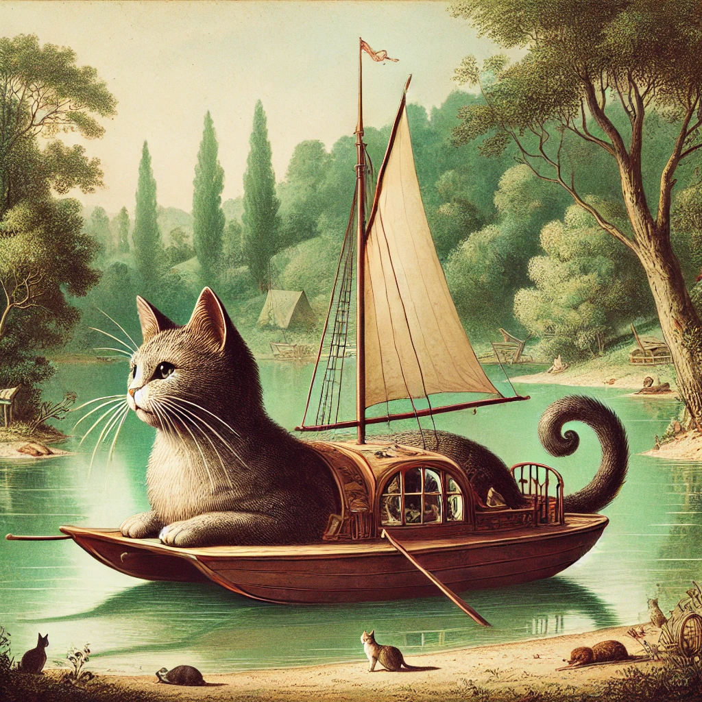

My Journey in Software Development: Year Two - The Climb
2024-10-14
My Journey in Software Development: Year Two - The Climb
— J.R.R. Tolkien, The Two Towers
Introduction
As my journey continued, the road became steeper, and the challenges ahead multiplied. Year two felt like Frodo's ascent — a long, grueling climb with shadows closing in. The second year of my diploma tested my resolve, introducing more complex concepts and projects that pushed my limits.
The Expanding Horizon
The landscape shifted dramatically in year two. It began with Data Structures and Algorithms, exploring C# and software design patterns. Transitioning from Python to C# was immensely challenging, with its stricter syntax rules, complex variable types, and heavy object-oriented focus. Defining classes and using IDEs like Visual Studio felt overwhelming compared to the simplicity of VS Code, PyCharm, or Notepad++.
Compounding the challenge was diving into Mobile App Development using Xamarin for cross-platform development.
Later came Game Development using Godot and Software Testing and Maintenance using Python and Git. Unfortunately, I became ill due to COVID-19 and made the difficult but sensible decision to repeat the term rather than struggle through it. However, the curriculum shifted, and Game Development was replaced with Advanced Mobile Development.
Knowing what to expect this time with Software Testing and Maintenance, I sharpened my Git skills and gained a stronger grasp of the command line in both Windows and Linux.
Advanced Mobile Development, however, added another layer of difficulty. The program switched from Xamarin to React Native, leaving me at a disadvantage. With barely any experience in React or JavaScript, it felt like learning Elvish — alien and incomprehensible.
Respite
The focus then shifted to teamwork and software development methodologies. Classes in Agile Project Management and Secure Web App Development covered Agile principles, Kanban, Scrum, DevOps, and applying these methodologies using Django.
My previous management experience made teamwork and project management feel natural, rebuilding my confidence. However, the team often relied on my organizational skills, which limited my opportunities to develop my coding abilities and master Django.
The year concluded with Data Access Management, delving deeper into databases including non-relational databases with MongoDB. This knowledge proved invaluable later. Web services introduced a range of topics, including software architecture, SOAP, RESTful APIs, Webhooks, and tools like Zapier.
Challenges
This year was immensely challenging. The ever-changing landscape of topics, languages, and frameworks felt impossible to absorb in such a short time. Every revisit felt like starting from scratch. My confidence took a major hit as I struggled to keep up, often feeling completely overwhelmed and incapable. It was a year of self-doubt, where the struggle to stay afloat overshadowed the joy of learning.
Top of the Mountain
The year culminated in the final project, a full-stack application of our choice developed with a partner. Working with someone who was facing similar struggles was a godsend. We chose the MERN stack (MongoDB, Express, React, Node.js) based on industry trends. Taking the front-end lead was a deliberate decision — I wanted to conquer my fear of React and JavaScript. Though our project was likely too ambitious for the timeframe, we learned invaluable lessons along the way. Strong project management and mutual support allowed us to deliver something we were proud of, and the experience was deeply rewarding.
Conclusion
Year two was a turning point, where the seemingly insurmountable hurdles knocked me down time and again, but I eventually conquered them. Completing the final project restored my confidence.
The nuggets of information I thought I hadn’t absorbed began to surface, revealing deeper understanding. More importantly, I overcame my fear of failure. The hesitation to build or try new things — borne from a lack of knowledge or fear of mistakes — is now behind me.
While my early attempts were imperfect (or outright disasters), I learned that practice and persistence are the keys to growth. Self-reflection became a powerful tool in my growth as a developer, and a valuable lesson in life.
— J.R.R. Tolkien, The Two Towers